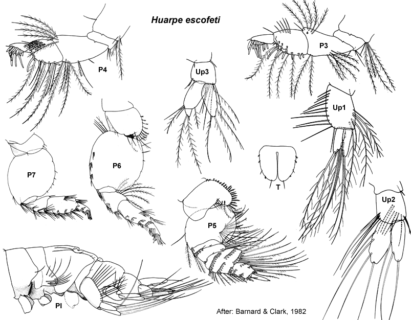

Huarpe escofeti Barnard & Clark, 1982: 285, figs 1–6.
Type Material. Lodged in the USNM.
Type Locality. San Roman Beach, Gulf of San Jose, Argentina.
Description.Antenna 1 peduncular article 1 setal row with
only slender setae, proximal pair of setae plumose; accessory flagellum
5 -articulate; primary flagellum 7 -articulate. Antenna 2 peduncular article 4 main setal row with robust and slender setae, proximal part of row evenly angled. Mandible incisors with 3 weak teeth. Maxilla 1 palp with some setae displaced subapically.
Gnathopod 1 simple; coxa small, subrectangular, smaller than coxa 2. Gnathopod 2 minutely chelate, propodus palm obtuse. Pereopod 3 coxa large, smaller than coxa 4. Pereopod 4 coxa large, posteroventral lobe present. Pereopod 5 basis with mediofacial brush of setae; dactylus without robust setae. Pereopod 6 basis fully expanded; merus with slender setae on posterior margin continuous to apex; dactylus vestigial. Pereopod 7 coxa without long posterior spine; basis fully expanded, with slender setae along posteroproximal margin; dactylus vestigial.
Epimeron 2 subequal in size to epimeron 3, posteroventral corner broadly rounded, more setose than epimeron 3. Epimeron 3 posteroventral corner broadly rounded. Uropod 1 inner ramus longer than outer ramus, not fused to peduncle. Uropod 2 inner ramus subequal in length to outer ramus, not fused to peduncle. Telson subequal in length and breadth, strongly cleft.
Remarks. To date, this is the only species of Urohaustoriid known from outside of Australia.
Distribution.Argentina, Chile: Gulf of San Jose southwards to eastern Strait of Magellan.

___________________________
This
publication should be cited as: Kilgallen, N.M. & Lowry, J.K. 2008.
Urohaustoriidae (Amphipoda): World Genera and Species. Version 1. 1
January 2008. http://crustacea.net.